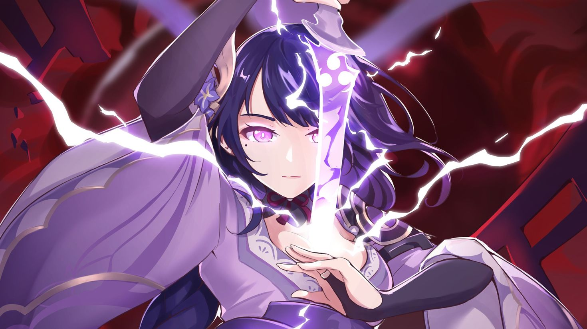
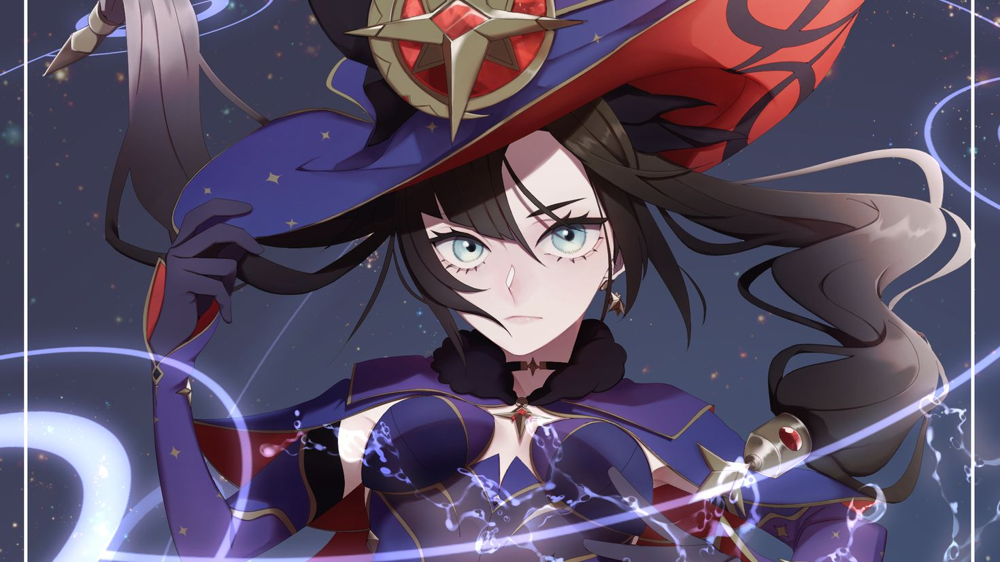
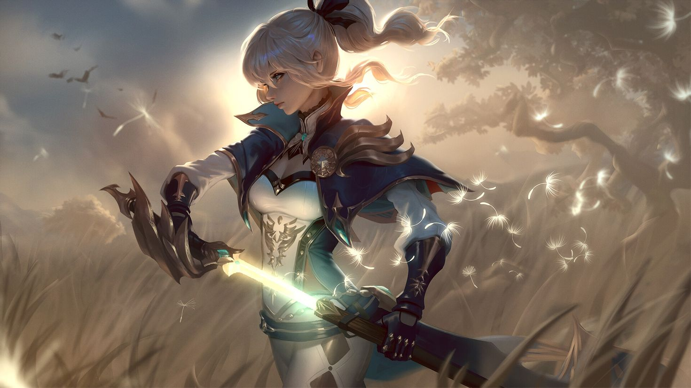
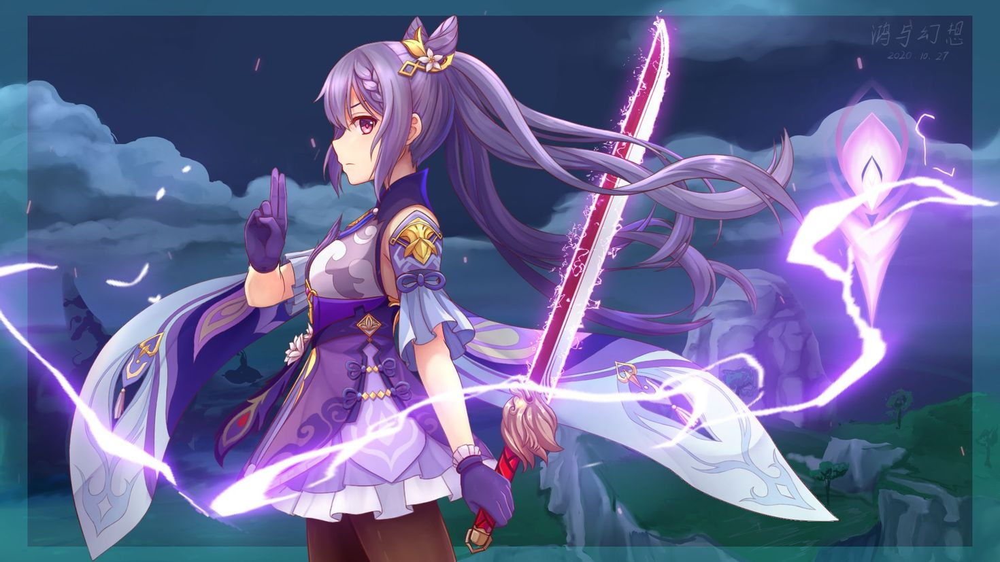
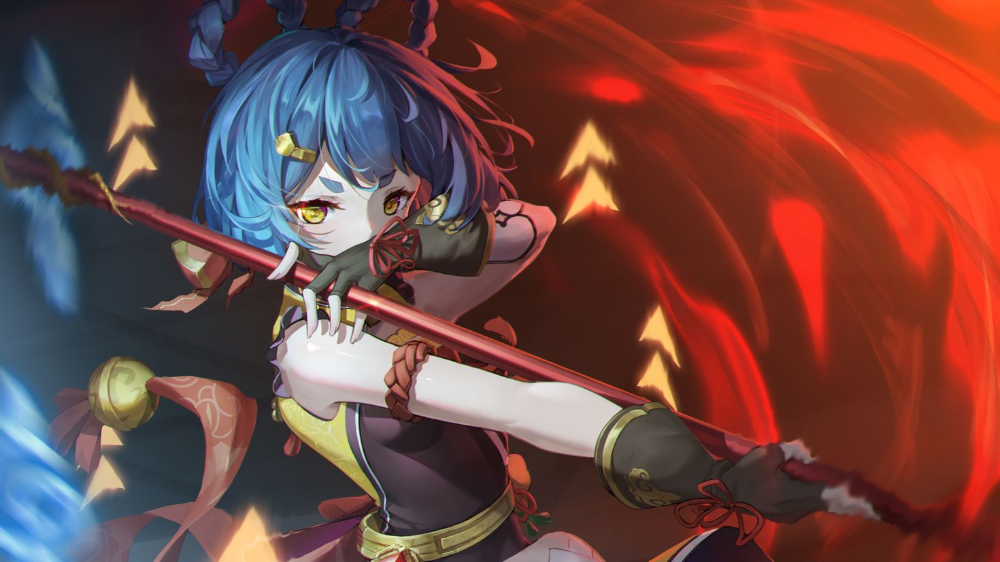

Raiden Shogun
Raiden Shogun is the Electro Archon of Inazuma in Genshin Impact, known for her pursuit of eternity and immense power.
arrow_forward

Mona
Mona is a skilled astrologer in Genshin Impact, known for her mysterious nature, Hydro abilities, and financial hardships.
arrow_forward

Jean
Jean is the Acting Grand Master of the Knights of Favonius in Genshin Impact, known for her strong sense of duty.
arrow_forward

Keqing
Keqing is the Yuheng of the Liyue Qixing in Genshin Impact, known for her decisive nature and Electro abilities.
arrow_forward

Xiangling
Xiangling is a passionate chef from Liyue in Genshin Impact, known for her adventurous cooking and Pyro abilities.
arrow_forward